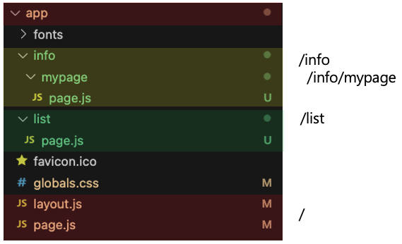

App Router
App Router는 Next.js 13에서 도입된 app/ 디렉토리를 기반으로 하는 파일 기반 라우팅 방식이다.
app/ directory 하위에 디렉토리를 하나 생성하면 해당 디렉토리가 라우팅 주소가 된다.
예시로 app/ 바로 아래에 list directory를 생성, list directory 하위에 page.js 파일을 정의하면
웹 페이지 상에서 http://localhost:port/list 로 요청 시 list directory의 page.js가 출력된다.
Next.js로 생성한 프로젝트 폴더 구조를 경로로 표시하면 아래와 같다.
page.js는 하나의 경로에 단일 UI를 표시한다.

layout.js
위에 Next.js로 생성한 프로젝트 구조를 보면 app 디렉토리 하위에 layout.js라는 파일이 존재한다.
layout.js는 App Router (App/ Directory를 기반으로 하는 라우팅 시스템) 에서 공유하는 레이아웃을 구성하기 위한 파일로
해당 경로의 모든 하위 페이지에 적용되는 공통 UI를 정의하는 데 사용된다.
예시로 app/page.js, info/mypage/page.js, list/page.js에 동일한 header, footer 컴포넌트를 추가해야 하는 상황을 가정해 보자.
그러면 중복되는 Html 코드를 모두 3개의 page.js 파일에 작성해 주어야 한다.
하지만 app 디렉토리의 layout.js에 3가지 파일에 공통적으로 추가할 UI 코드를 명시해 주면 모든 파일에 해당 코드가 추가되어 렌더링된다.
layout.js 코드를 뜯어보면 {children} 이라는 코드가 있는데 해당 위치에 page.js가 삽입된다.
export default function RootLayout({ children }) {
return (
<html lang="en">
<body
className={`${geistSans.variable} ${geistMono.variable} antialiased`}
>
// 공통으로 추가할 코드
<header>공통 헤더</header>
{children}
<footer>공통 푸터</footer>
// 공통으로 추가할 코드
</body>
</html>
);
}
이처럼 layout.js는 Next.js App Router에서 필수적인 구성요소로 Header, Footer, Navbar 같이 다수의 Component에서 공통적으로 사용하는 UI를 깔끔하게 관리, 정의할 수 있는 기능을 제공한다.